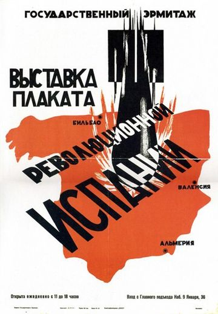

War film is a film genre concerned with warfare, typically about naval, air, or land battles, with combat scenes central to the drama. It has been strongly associated with the 20th century.[1][2] The fateful nature of battle scenes means that war films often end with them. Themes explored include combat, survival and escape, camaraderie between soldiers, sacrifice, the futility and inhumanity of battle, the effects of war on society, and the moral and human issues raised by war. War films are often categorized by their milieu, such as the Korean War; the most popular subject is the Second World War. The stories told may be fiction, historical drama, or biographical. Critics have noted similarities between the Western and the war film.
Similar: See Spaghetti Western
Nations such as China, Indonesia, Japan, and Russia have their own traditions of war film, centred on their own revolutionary wars but taking varied forms, from action and historical drama to wartime romance.
Subgenres, not necessarily distinct, include anti-war, comedy, propaganda, and documentary. There are similarly subgenres of the war film in specific theatres such as the Western Desert of North Africa and the Pacific in the Second World War, Vietnam, or the Soviet-Afghan War; and films set in specific domains of war, such as the infantry, the air, at sea, in submarines or at prisoner of war camps.
The war film genre is not necessarily tightly defined: the American Film Institute, for example, speaks of "films to grapple with the Great War" without attempting to classify these.[3] However, some directors and critics have offered at least tentative definitions. The director Sam Fuller defined the genre by saying that "a war film’s objective, no matter how personal or emotional, is to make a viewer feel war."[4] John Belton identified four narrative elements of the war film within the context of Hollywood production: a) the suspension of civilian morality during times of war, b) primacy of collective goals over individual motivations, c) rivalry between men in predominantly male groups as well as marginalization and objectification of women, and d) depiction of the reintegration of veterans.[5]
The film critic Stephen Neale suggests that the genre is for the most part well defined and uncontentious, since war films are simply those about war being waged in the 20th century, with combat scenes central to the drama. However, Neale notes, films set in the American Civil War or the American Indian Wars of the 19th century were called war films in the time before the First World War.[1] The critic Julian Smith argues, on the contrary, that the war film lacks the formal boundaries of a genre like the Western, but that in practice, "successful and influential" war films are about modern wars, in particular World War II, with the combination of mobile forces and mass killing.[2] The film scholar Kathryn Kane[6] points out some similarities between the war film genre and the Western. Both genres use opposing concepts like war and peace, civilization and savagery. War films usually frame World War II as a conflict between "good" and "evil" as represented by the Allied forces and Nazi Germany whereas the Western portrays the conflict between civilized settlers and the savage indigenous peoples.[7] James Clarke notes the similarity between a Western like Sam Peckinpah's The Wild Bunch and "war-movie escapades" like The Dirty Dozen.[8]
The film historian Jeanine Basinger states that she began with a preconception of what the war film genre would be, namely that:
Further, Basinger considers Bataan to provide a definition-by-example of "the World War II combat film", in which a diverse and apparently unsuited group of "hastily assembled volunteers" hold off a much larger group of the enemy through their "bravery and tenacity".[10] She argues that the combat film is not a subgenre but the only genuine kind of war film. Since she notes that there were in fact only five true combat films made during the Second World War, in her view these few films, central to the genre, are outweighed by the many other films that are only just war films.[11] However, other critics such as Russell Earl Shain propose a far broader definition of war film, to include films that deal "with the roles of civilians, espionage agents, and soldiers in any of the aspects of war (i.e. preparation, cause, prevention, conduct, daily life, and consequences or aftermath.)"[12] Neale points out that genres overlap, with combat scenes for different purposes in other types of film, and suggests that war films are characterised by combat which "determines the fate of the principal characters". This in turn pushes combat scenes to the climactic ends of war films.[13] Not all critics agree, either, that war films must be about 20th-century wars. James Clarke includes Edward Zwick's Oscar-winning Glory (1990) among the war films he discusses in detail; it is set in the American Civil War, and he lists six other films about that war which he considers "notable".[14][a] The screenwriter and scholar Eric R. Williams identifies war films as one of eleven super-genres in his screenwriters' taxonomy, claiming that all feature-length narrative films can be classified as belonging to one of them.[b][16]
The British military historian Antony Beevor "despair[s]" at how film-makers from America and Britain "play fast and loose with the facts", yet imply that "their version is as good as the truth".[17] For example, he calls the 2000 American film U-571 a "shameless deception" for pretending that a US warship had helped to win the Battle of the Atlantic—seven months before America entered the war.[17] He is equally critical of Christopher Nolan's 2017 film Dunkirk with its unhistorically empty beaches, low-level air combat over the sea, and rescues mainly by the "little ships".[17] Beevor feels, however, that Continental European film-makers are often "far more scrupulous"; for example, in his view the 2004 German film Downfall accurately depicted the historical events of Hitler's final days in his Berlin bunker,[17] and he considers the 1965 French film The 317th Platoon, set in Vietnam, "the greatest war movie ever made". The 1966 film The Battle of Algiers is, he argues, a close second.[17]
The costliest war in U.S. history in terms of American life, this war has been the subject of, or the backdrop to, numerous films, documentaries and mini-series. One of the earliest films using the Civil War as its subject was D.W. Griffith's 1910 silent picture, The Fugitive.[18] Films that have the war as its main subject, or about a certain aspect of the war, include the 1989 film Glory, about the first formal unit of the Union Army during the American Civil War to be made up entirely of black men.[19] Some films such as Gettysburg focused on a single battle during the war,[20] or even on a single incident, like the French short film La Rivière du Hibou (An Occurrence at Owl Creek Bridge).[21] Others like the 1993 miniseries North and South spanned the entire breadth of the war. Some films deal with the human aspects of the war, such as The Red Badge of Courage (1951),[22] or Shenandoah (1965), on the tragedy that the war inflicted on the civilian population.[23] Ken Burns's The Civil War is the most-watched documentary in the history of PBS.[24]
The first war films come from the Spanish–American War of 1898. Short "actualities"—documentary film-clips—included Burial of the Maine Victims, Blanket-Tossing of a New Recruit, and Soldiers Washing Dishes. These non-combat films were accompanied by "reenactments" of fighting, such as of Theodore Roosevelt's "Rough Riders" in action against the Spanish, staged in the United States.[25]
During the First World War, many films were made about life in the war. Topics included prisoners of war, covert operations, and military training. Both the Central Powers and the Allies produced war documentaries. The films were also used as propaganda in neutral countries like the United States. Among these was a film shot on the Eastern Front by official war photographer to the Central Powers, Albert K. Dawson: The Battle and Fall of Przemysl (1915), depicting the Siege of Przemyśl, disastrous for the Austrians, with incidents reenacted using soldiers as extras.[26][27]
The 1915 Australian film Within Our Gates (also known as Deeds that Won Gallipoli) by Frank Harvey was described by the Motion Picture News as "a really good war story, which is exceptional".[28]
The 1916 British film The Battle of the Somme, by two official cinematographers, Geoffrey Malins and John McDowell, combined documentary and propaganda, seeking to give the public an impression of what trench warfare was like. Much of the film was shot on location at the Western Front in France; it had a powerful emotional impact. It was watched by some 20 million people in Britain in its six weeks of exhibition, making it what the critic Francine Stock called "one of the most successful films of all time".[29][30]
The 1925 American film The Big Parade depicted unglamorous elements of war: the protagonist loses his leg, and his friends are killed.[31] William A. Wellman's Wings (1927) showed aerial combat during the war and was made in cooperation with the Army Air Corps. It proved a powerful recruiting tool.[32] It became the first film (in any genre) to be awarded an Oscar for best picture.[33] Later films of varied genres that deal with the First World War include David Lean's "colossal epic", both war film and biopic[34] Lawrence of Arabia (1962), shot in the then unfamiliar and exciting 70mm Technicolor,[35] and described by Steven Spielberg as "maybe the greatest screenplay ever written for the motion-picture medium";[34] Richard Attenborough's satirical anti-war musical comedy based on Joan Littlewood's play of the same name, Oh! What a Lovely War (1969);[36] Spielberg's 2011 war drama War Horse was based on Michael Morpurgo's children's novel of the same name.[37]
Many of the films promoted as "documentaries" added context to authentic battlefield scenes by staging critical events, and invented episodes and dialog to enhance excitement at the cost of authenticity.[38]
See Documentaries
Although the 1918 Finnish Civil War between Whites and Reds remained a controversial topic a century later in Finland,[39][40] many Finnish filmmakers have taken up the subject, often basing their work on a book. In 1957, Toivo Särkkä's 1918, based on Jarl Hemmer's play and novel, was screened at the 7th Berlin International Film Festival.[41] Recent films include Lauri Törhönen's 2007 The Border,[42][43] and Aku Louhimies's 2008 Tears of April, based on Leena Lander's novel.[44] Perhaps the most famous film about the Finnish Civil War is Edvin Laine's 1968 Here, Beneath the North Star, based on the first two books of Väinö Linna's Under the North Star trilogy; it describing the civil war from the losing side, Finland's Red Guards.[45]
The Spanish Civil War has attracted directors from different countries. Sam Wood's For Whom the Bell Tolls (1943), based on Ernest Hemingway's book of the same name, portrays the fated romance between an American played by Gary Cooper and a partisan played by Ingrid Bergman against the backdrop of the civil war. The epic 168-minute film with its landscapes shot in Technicolor and a "beautiful" orchestral score was a success both with audiences and with critics.[46] Alain Resnais's Guernica (1950) uses Picasso's 1937 painting of the same name to protest against war.[46] Carlos Saura's La Caza (The Hunt, 1966) uses the metaphor of hunting to criticise the aggressiveness of Spanish fascism.[47] It won the Silver Bear for Best Director at the 16th Berlin International Film Festival in 1966.[48] Ken Loach's Land and Freedom (Tierra y Libertad, 1995), loosely based on George Orwell's Homage to Catalonia, follows a British communist through the war to reveal the painful contradictions within the anti-fascist Republican side.[46]
Samuel Fuller’s The Steel Helmet (1951) was made during the Korean War (1950–1953). The critic Guy Westwell notes that it questioned the conduct of the war, as did later films like The Bridges at Toko-Ri (1954) and Pork Chop Hill (1959).[49] Fuller agreed that all his films were anti-war. No Hollywood films about the Korean War did well at the box office; the historian Lary May suggested in 2001 that they reminded American viewers of "the only war we have lost".[50]
In 1955, after the fighting, the successful South Korean action film Piagol about leftist guerrilla atrocities encouraged other film-makers. The 1960s military government punished pro-communist film-makers and gave Grand Bell Awards to films with the strongest anti-communist message. The Taebaek Mountains (1994) dealt with leftists from the south who fought for the communists, while Silver Stallion (1991) and Spring in My Hometown (1998) showed the destructive impact of American military presence on village life. The violent action films Shiri (1999) and Joint Security Area (2000) presented North Korea in a favourable light.[51]
Films in North Korea were made by government film studios and had clear political messages. The first was My Home Village (1949), on the liberation of Korea from the Japanese, presented as the work of Kim Il Sung without help from the Americans. Similarly, the country's films about the Korean War show victory without help from the Chinese. The film scholar Johannes Schönherr concludes that the purpose of these films is "to portray North Korea as a country under siege", and that since the U.S. and its "puppet" South Korea invaded the North once, they would do so again.[52]
Gillo Pontecorvo's dramatic The Battle of Algiers ((Italian: La battaglia di Algeri; Arabic: معركة الجزائر; French: La Bataille d'Alger), 1966) portrayed events in the Algerian War (1954–1956). It was shot on location as an Italo-Algerian co-production. It had the black and white newsreel style of Italian neorealism, and even-handedly depicts violence on both sides. It won various awards including Golden Lion at the Venice Film Festival.[53] It was attacked by French critics and was for five years banned in France as well as Jamila, the Algerian (1958).[54]
Few films before the late 1970s about the Vietnam War actually depicted combat;[55] exceptions include The Green Berets (1968).[55] Critics such as Basinger explain that Hollywood avoided the subject because of opposition to United States involvement in the Vietnam War, making the subject divisive; in addition, the film industry was in crisis, and the army did not wish to assist in making anti-war films.[55][56]
From the late 1970s, independently financed and produced films showed Hollywood that Vietnam could be treated in film. Successful but very different portrayals of the war in which America had been defeated included Michael Cimino's The Deer Hunter (1978), and Francis Ford Coppola's Apocalypse Now (1979).[55] With the shift in American politics to the right in the 1980s, military success could again be shown in films such as Oliver Stone's Platoon (1986), Stanley Kubrick's Full Metal Jacket (1987) and John Irvin's Hamburger Hill (1987).[55]
The Vietnamese director Nguyễn Hồng Sến [vi]'s The Abandoned Field: Free Fire Zone (Cánh đồng hoang, 1979) gives an "unnerving and compelling .. subjective-camera-eye-view" of life under helicopter fire in the Mekong Delta during the Vietnam War. The film cuts to an (American) "helicopter-eye view", contrasting painfully with the human tenderness seen earlier.[57]
Dino Mustafić's Remake (2003), written by Zlatko Topčić, tells the parallel coming-of-age stories of a father living in Sarajevo during World War II and his son living through the Siege of Sarajevo during the Bosnian War. According to Topčić, the story is based on incidents from his own life.[58][59]
The Iraq War served as the background story of U.S. movies, like The Hurt Locker from 2008, Green Zone from 2010,[60] and American Sniper from 2014.
The War in Afghanistan since 2001 was depicted in various movies, among them Restrepo in 2010 and Lone Survivor from 2013.[60]
The first popular Allied war films made during the Second World War came from Britain and combined the functions of documentary and propaganda. Films such as The Lion Has Wings and Target for Tonight were made under the control of the Films Division of the Ministry of Information. The British film industry began to combine documentary techniques with fictional stories in films like Noël Coward and David Lean's In Which We Serve (1942)—"the most successful British film of the war years"[61]—Millions Like Us (1943), and The Way Ahead (1944).[62]
In America, documentaries were produced in various ways: General Marshall commissioned the Why We Fight propaganda series from Frank Capra; the War Department's Information-Education Division started out making training films for the U.S. Air Force and U.S. Navy; the Army made its own through the U.S. Signal Corps, including John Huston's The Battle of San Pietro.[63] Hollywood made films with propaganda messages about America's allies, such as Mrs. Miniver (1942), which portrayed a British family on the home front;[64] Edge of Darkness (1943) showed Norwegian resistance fighters,[65] and The North Star (1943) showed the Soviet Union and its Communist Party.[66] Towards the end of the war popular books provided higher quality and more serious stories for films such as Guadalcanal Diary (1943),[67] Mervyn LeRoy's Thirty Seconds Over Tokyo (1944),[68] and John Ford's They Were Expendable (1945).[69]
The Soviet Union, too, appreciated the propaganda value of film, to publicise both victories and German atrocities. Ilya Kopalin's documentary Moscow Strikes Back (Russian: Разгром немецких войск под Москвой, literally "The rout of the German troops near Moscow"), was made during the Battle of Moscow between October 1941 and January 1942. It depicted civilians helping to defend the city, the parade in Red Square and Stalin's speech rousing the Russian people to battle, actual fighting, Germans surrendering and dead, and atrocities including murdered children and hanged civilians. It won an Academy Award in 1943 for best documentary.[70][71] Newsreel cameras were similarly rushed to Stalingrad early in 1943 to record "the spectacle which greeted the Russian soldiers"—the starvation of Russian prisoners of war in the Voropovono camp by the German Sixth Army, defeated in the Battle of Stalingrad.[72]
Feature films made in the west during the war were subject to censorship and were not always realistic in nature. One of the first to attempt to represent violence, and which was praised at the time for "gritty realism", was Tay Garnett's Bataan (1943). The depiction actually remained stylised. Jeanine Basinger gives as an example the "worst image for stark violence" when a Japanese soldier beheads an American: the victim shows pain and his lips freeze in a scream, yet no blood spurts and his head does not fall off. Basinger points out that while this is physically unrealistic, psychologically it may not have been. The wartime audience was, she points out, well aware of friends and relatives who had been killed or who had come home wounded.[73]
The Axis powers similarly made films during the Second World War, for propaganda and other purposes. In Germany, the army high command brought out Sieg im Westen ("Victory in the West", 1941).[74] Other Nazi propaganda films had varied subjects, as with Kolberg (1945), which depicts stubborn Prussian resistance in the Siege of Kolberg (1807) to the invading French troops under Napoleon.[75] The propaganda minister Joseph Goebbels chose the historical subject as suitable for the worsening situation facing Nazi Germany when it was filmed from October 1943 to August 1944. At over eight million marks, using thousands of soldiers as extras and 100 railway wagonloads of salt to simulate snow, it was the most costly German film made during the war. The actual siege ended with the surrender of the town; in the film, the French generals abandon the siege.[76]
For Japan, the war began with the undeclared war and invasion of China in 1937, which the Japanese authorities called "The China Incident". The government dispatched a "pen brigade" to write and film the action in China with "humanist values". Tomotaka Tasaka's Mud and Soldiers (1939) for instance, shot on location in China, Kōzaburō Yoshimura's Legend of Tank Commander Nishizumi, and Sato Takeshi's Chocolate and Soldiers (1938) show the common Japanese soldier as an individual and as a family man, and even enemy Chinese soldiers are presented as individuals, sometimes fighting bravely.[77] Once war with the United States was declared, the Japanese conflict became known as the Pacific War. Japanese film critics worried that even with Western film techniques, their film output failed to represent native Japanese values.[78] The historian John Dower found that Japanese wartime films had been largely forgotten, as "losers do not get reruns", yet they were so subtle and skilful that Frank Capra thought Chocolate and Soldiers unbeatable. Heroes were typically low-ranking officers, not samurai, calmly devoted to his men and his country.[79] These films did not personalise the enemy and therefore lacked hatred, though Great Britain could figure as the "cultural enemy". For Japanese film-makers, war was not a cause but more like a natural disaster, and "what mattered was not whom one fought but how well". Asian enemies, especially the Chinese, were often portrayed as redeemable and even possible marriage partners. Japanese wartime films do not glorify war, but present the Japanese state as one great family and the Japanese people as an "innocent, suffering, self-sacrificing people". Dower comments that the perversity of this image "is obvious: it is devoid of any recognition that, at every level, the Japanese also victimized others."[80]
According to Andrew Pulver of The Guardian, the public fascination with war films became an "obsession", with over 200 war films produced in each decade of the 1950s and 1960s.[81] War film production in the United Kingdom and United States reached its zenith in the mid-1950s. [82] Its popularity in the United Kingdom was brought on by the critical and commercial success of Charles Frend's The Cruel Sea (1953).[82] Like others of the period, The Cruel Sea was based on a bestselling novel, in this case the former naval commander Nicholas Monsarrat's story of the battle of the Atlantic.[83][84] Others, like The Dam Busters (1954), with its exciting tale of the inventor Barnes Wallis's unorthodox bouncing bomb and its distinctive theme music, were true stories. The Dam Busters became the most popular film in Britain in 1955,[85] and remained a favourite as of 2015 with a 100% score on Rotten Tomatoes,[86] though, partly because it celebrated an "exclusively British [victory]", it failed in the American market.[87] A large number of war films were made in the 1955–1958 period in particular. In 1957 alone, Bitter Victory, Count Five and Die, The Enemy Below, Ill Met by Moonlight, Men in War, The One That Got Away, and Seven Thunders, and the highly successful, critically acclaimed pictures The Bridge on the River Kwai (which won the Academy Award for Best Picture that year[88]) and Paths of Glory were released.[89] Some, such as Bitter Victory, focused more on the psychological battle between officers and egotism rather than events during the war.[90] The Bridge on the River Kwai brought a new complexity to the war picture, with a sense of moral uncertainty surrounding war. By the end of the decade the "sense of shared achievement" which had been common in war films "began to evaporate", according to Pulver.[81]
Hollywood films in the 1950s and 1960s could display spectacular heroics or self-sacrifice, as in the popular Sands of Iwo Jima (1949) starring John Wayne. U.S. Marines considered Sands of Iwo Jima visually authentic, but found Lewis Milestone's Battle Cry (1955), with its attention to the lives of the men, the more realistic film.[91] The formula for a successful war film consisted, according to Lawrence Suid, of a small group of ethnically diverse men; an unreasonable senior officer; cowards became heroic, or died.[91] Jeanine Basinger suggests that a traditional war film should have a hero, a group, and an objective, and that the group should contain "an Italian, a Jew, a cynical complainer from Brooklyn, a sharpshooter from the mountains, a midwesterner (nicknamed by his state, 'Iowa' or 'Dakota'), and a character who must be initiated in some way".[73] Films based on real commando missions, like The Gift Horse (1952) based on the St. Nazaire Raid, and Ill Met by Moonlight (1956) based on the capture of the German commander of Crete, inspired fictional adventure films such as The Guns of Navarone (1961), The Train (1964), and Where Eagles Dare (1968). These used the war as a backdrop for spectacular action.[81]
Darryl F. Zanuck produced the 178 minute documentary drama The Longest Day (1962), based on the first day of the D-Day landings, achieving commercial success and Oscars.[93] It was followed by large-scale but thoughtful films like Andrei Tarkovsky's Ivan's Childhood (1962), and quasi-documentary all-star epics filmed in Europe such as Battle of the Bulge (1965), Battle of Britain (1969), The Battle of Neretva (1969), Midway (1976), and A Bridge Too Far (1977). In Lawrence Suid's view, The Longest Day "served as the model for all subsequent combat spectaculars".[94] However, its cost also made it the last of the traditional war films, while the controversy around the help given by the U.S. Army and Zanuck's "disregard for Pentagon relations" changed the way that Hollywood and the Army collaborated.[94]
Zanuck, by then an executive at 20th Century Fox, set up an American–Japanese co-production for Richard Fleischer's Tora! Tora! Tora! (1970) to depict what "really happened on December 7, 1941" in the surprise attack on Pearl Harbor.[95][96] The film, panned by Roger Ebert[97] and The New York Times,[98] was a major success in Japan.[95] Its realistic-looking attack footage was reused in later films such as Midway (1976), The Final Countdown (1980), and Australia (2008).[99] The story was revisited in Pearl Harbor (2001), described by The New York Times as a "noisy, expensive and very long new blockbuster", with the comment that "for all its epic pretensions (as if epic were a matter of running time, tumescent music and earnest voice-over pronouncements), the movie works best as a bang-and-boom action picture".[100]
Steven Spielberg's Saving Private Ryan (1998) uses hand-held camera, sound design, staging, and increased audio-visual detail to defamiliarise viewers accustomed to conventional combat films, so as to create what film historian Stuart Bender calls "reported realism", whether or not the portrayal is genuinely more realistic.[101] Jeanine Basinger notes that critics experienced it as "groundbreaking and anti-generic", with, in James Wolcott's words, a "desire to bury the cornball, recruiting poster legend of John Wayne: to get it right this time"; and that combat films have always been "grounded in the need to help an audience understand and accept war".[73] Its success revived interest in World War II films.[102] Others tried to portray the reality of the war, as in Joseph Vilsmaier's Stalingrad (1993), which The New York Times said "goes about as far as a movie can go in depicting modern warfare as a stomach-turning form of mass slaughter".[103]
Many war films have been produced with the cooperation of a nation's military forces. Since the Second World War, the United States Navy has provided ships and technical guidance for films such as Top Gun. The U.S. Air Force assisted with The Big Lift, Strategic Air Command and A Gathering of Eagles, which were filmed on Air Force bases; Air Force personnel appeared in many roles.[104] Critics have argued that the film Pearl Harbor's US-biased portrayal of events is a compensation for technical assistance received from the US armed forces, noting that the premiere was held on board a U.S. Navy carrier.[105] In another case, the U.S. Navy objected to elements of Crimson Tide, especially mutiny on board an American naval vessel, so the film was produced without their assistance.[106] The film historian Jonathan Rayner observes that such films "have also clearly been intended to serve vital propagandist, recruitment and public relations functions".[105]
The wartime authorities in both Britain and America produced a wide variety of documentary films. Their purposes included military training, advice to civilians, and encouragement to maintain security. Since these films often carried messages, they grade into propaganda. Similarly, commercially produced films often combined information, support for the war effort, and a degree of propaganda.[62][63] Newsreels, ostensibly simply for information, were made in both Allied and Axis countries, and were often dramatised.[125][126][127] More recently, in the Iran–Iraq War, Morteza Avini's Ravayat-e Fath (Chronicles of Victory) television series combined front-line footage with commentary.[128]
Sergei Eisenstein's 1938 historical drama Alexander Nevsky depicts Prince Alexander's defeat of the attempted invasion of the Russian city of Novgorod by the Teutonic Knights.[129] By April 1939 the film had been seen by 23,000,000 people.[130] In 1941 the director and three others were awarded the Stalin Prize for their contributions. The film features a musical score by the classical composer Sergei Prokofiev, considered by artists such as the composer André Previn the best ever written for cinema.[131][132] Russell Merritt, writing in Film Quarterly, describes it as a "war propaganda film".[133] A 1978 Mondadori poll placed Alexander Nevsky among the world's 100 best motion pictures.[134]
During the Second World War, film propaganda was widely used. Kenneth Clark advised the British government that "If we renounced interest in entertainment as such, we might be deprived of a valuable weapon for getting across our propaganda"; he suggested using documentaries about the war and the war effort; celebrations of Britishness; and films about British life and character. Michael Powell and Clark agreed on a story about survivors of a U-boat crew, imbued with brutal Nazi ideology, travelling across Canada and meeting various kind, tolerant and intelligent Canadians, to encourage America into the war. The resulting film, 49th Parallel (1941), became the top film at British offices that year.[136] Entertaining films could carry messages about the need for vigilance, too, as in Went the Day Well? (1942) or the avoidance of "careless talk", as in The Next of Kin (1942).[62]
In America, Charlie Chaplin's The Great Dictator (1940) clearly satirised fascism.[137] Michael Curtiz's Casablanca (1943) was not simply a romance between the characters played by Humphrey Bogart and Ingrid Bergman, but vilified the Nazis and glorified resistance to them.[137] Frank Capra's Why We Fight series (1942–1945) won the 1942 Academy Award for best documentary, though it was designed to "influence opinion in the U.S. military".[63][138]
During the Cold War, "propaganda played as much of a role in the United States' struggle with the Soviet Union as did the billions of dollars spent on weaponry."[139] Face to Face with Communism (1951) dramatised an imagined invasion of the United States; other films portrayed threats such as communist indoctrination.[139]
Submarine films have their own particular meanings and conventions, concerned specifically with giving the effect of submarine warfare. A distinctive element in this subgenre is the soundtrack, which attempts to bring home the emotional and dramatic nature of conflict under the sea. For example, in Wolfgang Petersen's 1981 Das Boot, the sound design works together with the hours-long film format to depict lengthy pursuit with depth charges, the ping of sonar, and threatening sounds such as of the propellers of enemy destroyers and torpedoes.[140] Classic films in the genre include The Enemy Below (1957)[141] and Run Silent, Run Deep (1958), both based on novels by naval commanders. Run Silent, Run Deep is a movie full of tension, both with the enemy and between the contrasting personalities of the submarine Commander and his Lieutenant, played by Clark Gable and Burt Lancaster.[142]
A popular subgenre of war films in the 1950s and 1960s was the prisoner of war film.[143] The genre was popularised in Britain with major films like Guy Hamilton's The Colditz Story (1955) and John Sturges's American film The Great Escape (1963).[143] They told stories of real escapes from German prisoner of war camps such as Stalag Luft III in the Second World War. Despite episodes of danger and human tragedy, these films delight in a continual boyish game of escape and ingenuity, celebrating the courage and the defiant spirit of the prisoners of war, and treating war as fun.[143][144][145] David Lean's Bridge on the River Kwai (1957) was judged best picture at the Oscars; it took the genre from chilly German prisons to the heat of a camp in Thailand. It was the first, too, to use lush colour to bring out the British stiff upper lip of the colonel, played by Alec Guinness in an Oscar-winning performance.[143] The "definitive" Oscar-winning prisoner of war film was Billy Wilder's Stalag 17 (1953), while the brief but powerful prison camp scenes of The Deer Hunter (1978) lend an air of tragedy to the whole of that film.[143]
Charlie Chaplin's Shoulder Arms (1918) set a style for war films to come, and was the first comedy about war in film history.[146][147] British cinema in the Second World War marked the evacuation of children from London with social comedies such as Those Kids from Town (1942) where the evacuees go to stay with an earl (a country nobleman), while in Cottage to Let (1941) and Went the Day Well? (1942) the English countryside is thick with spies.[148] Gasbags (1941) offered "zany, irreverent, knockabout" comedy making fun of everything from barrage balloons to concentration camps.[149] Abbott and Costello's Buck Privates (1941) was successful in America,[150] leading to many further wartime comedies.[151]
Winsor McCay's The Sinking of the Lusitania (1918) was a silent First World War film. At 12 minutes long, it was the longest animated film made at that time. It was probably the first animated propaganda film to be made; it remains the earliest serious animated drama that has survived.[152][153][154] Through World War II, animated propaganda shorts remained influential in American cinema. The Walt Disney Company, working with the American armed forces, produced 400,000 feet of war propaganda films between 1942 and 1945,[155] including Der Fuehrer's Face (1943) and Education for Death (1943).[156]
Japanese anime films from the 1960s onwards addressed national memories of war. Akira (1988) moves from the atomic destruction of Hiroshima and Nagasaki to apocalyptic visions of global conflict; Grave of the Fireflies (1988) is elegiac on the effect of war on children.[157][158] Barefoot Gen (1983) portrays the bombing of Hiroshima through the eyes of a child,[159] but reviewers consider it a less well made film than Grave of the Fireflies with "stomach-churning detail" bizarrely paired with crude artwork, giving it the look of a "Saturday morning Warner Brothers cartoon".[160]
The anti-war genre began with films about the First World War. Films in the genre are typically revisionist, reflecting on past events and often generically blended. Lewis Milestone's All Quiet on the Western Front (1930) was unquestionably powerful, and an early anti-war film, portraying a German point of view; it was the first film (in any genre) to win two Oscars, best picture and best director.[147] Andrew Kelly, analysing All Quiet on the Western Front, defined the genre as showing: the brutality of war; the amount of human suffering; the betrayal of men's trust by incompetent officers. War and anti-war films often prove difficult to categorize as they contain many generic ambiguities.[1] While many anti-war films criticize war directly through depictions of grisly combat in past wars, some films such as Penn's Alice's Restaurant criticized war obliquely by poking fun at such things as the draft board.[161] The number of anti-war films produced in America dipped sharply during the 1950s because of McCarthyism and the Hollywood blacklist.[162] The end of the blacklist and the introduction of the MPAA rating system marked a time of resurgence for films of all type including anti-war films in the States. Robert Eberwein names two films as anti-war classics.[163] The first is Jean Renoir's prisoner of war masterpiece[147] La Grande Illusion (The Grand Illusion, 1937). Renoir's critique of contemporary politics and ideology celebrates the universal humanity that transcends national and racial boundaries and radical nationalism, suggesting that mankind's common experiences should prevail above political division, and its extension: war.[164] The second is Stanley Kubrick's Paths of Glory (1957). The critic David Ehrenstein writes that Paths of Glory established Kubrick as the "leading commercial filmmaker of his generation" and a world-class talent. Ehrenstein describes the film as an "outwardly cool/inwardly passionate protest drama about a disastrous French army maneuver and the court-martial held in its wake", contrasting it with the "classic" All Quiet on the Western Front's story of an innocent "unstrung by the horrors of war".[165]